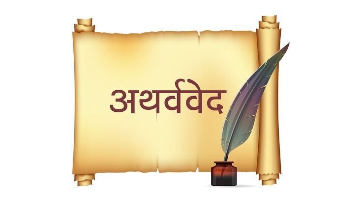
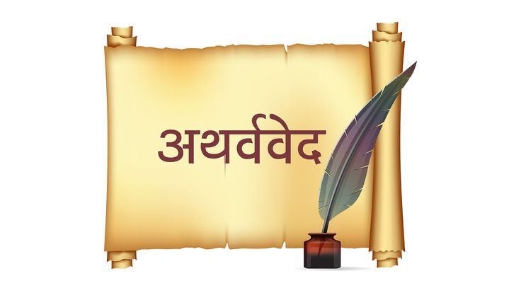

Divine Blessings of the Deities
कंदर्प अगणित अमित छवि नव नील नीरज सुन्दरम्।
The Four Vedas
 

Make Your Spiritual Journey Enlightening
Whether you're facing life's uncertainties or preparing for a sacred ceremony, Shri Sundram Acharya brings clarity and divine insight through ancient Vedic knowledge.